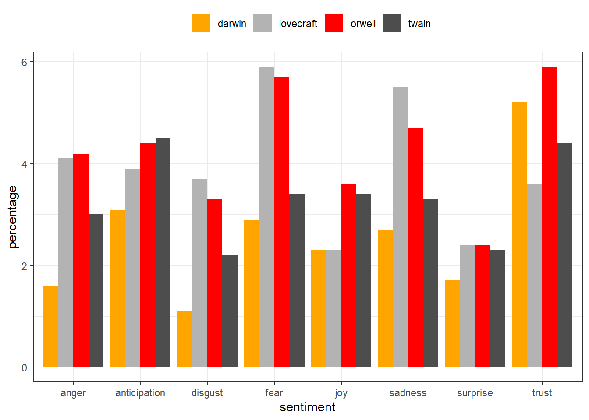
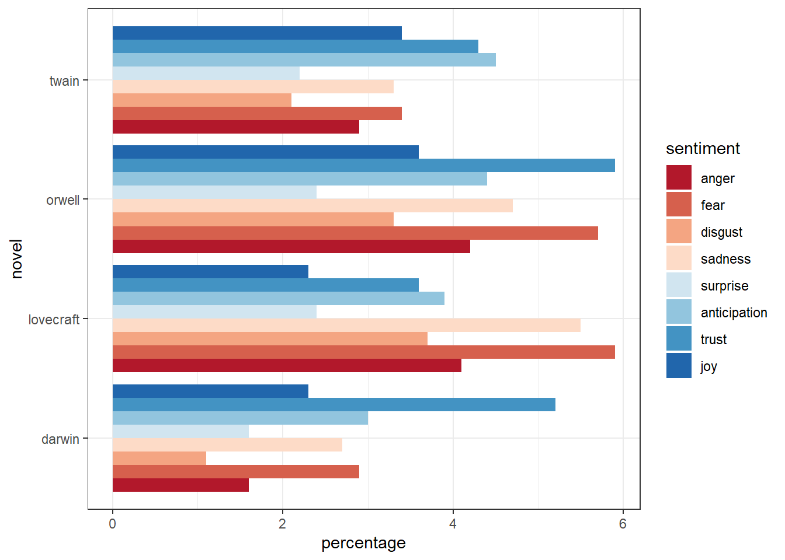
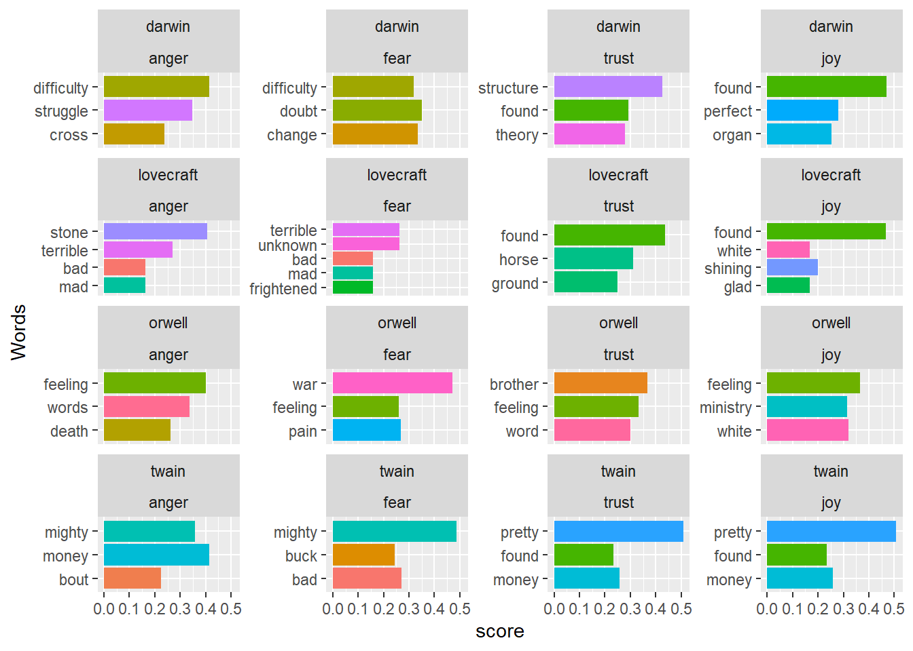
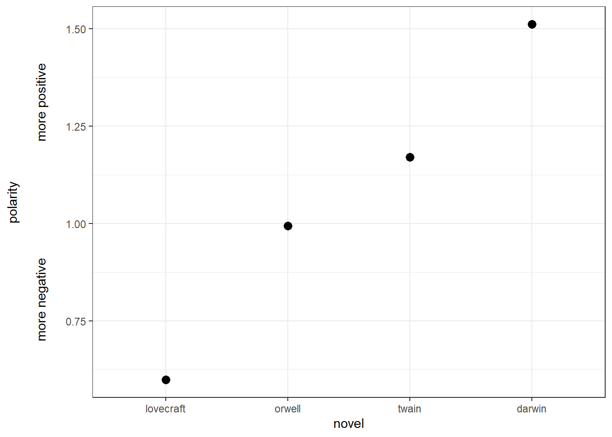
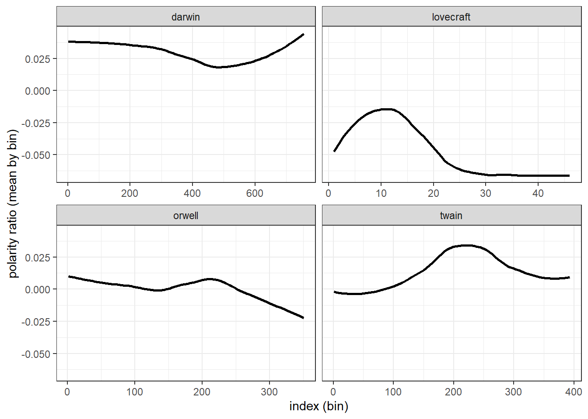
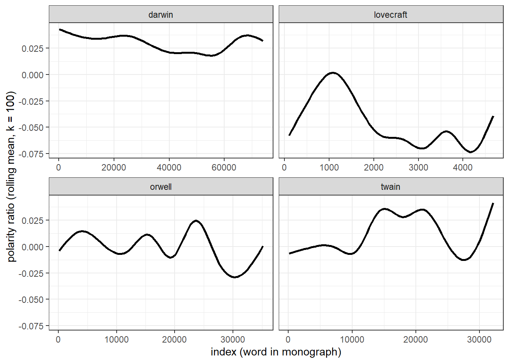

Sentiment Analysis in R
Martin Schweinberger
2020-10-04

Introduction
This tutorial introduces sentiment analysis (SA) and show how to petrform a SA in R. The entire R-markdown document for the tutorial can be downloaded here.
Preparation and session set up
This tutorial is based on R. If you have not installed R or are new to it, you will find an introduction to and more information how to use R here. For this tutorials, we need to install certain packages from an R library so that the scripts shown below are executed without errors. Before turning to the code below, please install the packages by running the code below this paragraph. If you have already installed the packages mentioned below, then you can skip ahead ignore this section. To install the necessary packages, simply run the following code - it may take some time (between 1 and 5 minutes to install all of the libraries so you do not need to worry if it takes some time).
# install libraries
install.packages(c("Hmisc", "dplyr", "ggplot2", "readr", "stringr",
"tidyr", "tidytext", "zoo", "sentimentr"))Once you have installed R-Studio and initiated the session by executing the code shown above, you are good to go.
1 Sentiment Analysis
Sentiment Analysis is a cover term for approaches which extract information on emotion or opinion from natural language (Silge and Robinson 2017). Sentiment analyses have been successfully applied to analysis of language data in a wide range of disciplines such as psychology, economics, education, as well as political and social sciences. Commonly sentiment analyses are used to determine the stance of a larger group of speakers towards a given phenomenon such as political candidates or parties, product lines or situations. Crucially, sentiment analyses are employed in these domains because they have advantages compared to alternative methods investigating the verbal expression of emotion. One advantage of sentiment analyses is that the emotion coding of sentiment analysis is fully replicable.
Typically, Sentiment Analysis represents a type of classifier only provide information about positive or negative polarity, e.g. whether a tweet is “positive” or “negative”. Therefore, Sentiment Analysis is often regarded as rather coarse-grained and, thus, rather irrelevant for the types of research questions in linguistics.
In the language sciences, Sentiment Analysis can also be a very helpful tool if the type of Sentiment Analysis provides more fine-grained information. In the following, we will perform such a information-rich Sentiment Analysis. The Sentiment Analysis used here does not only provide information about polarity but it will also provide association values for eight core emotions.
The more fine-grained output is made possible by relying on the Word-Emotion Association Lexicon (Mohammad and Turney 2013), which comprises 10,170 terms, and in which lexical elements are assigned scores based on ratings gathered through the crowd-sourced Amazon Mechanical Turk service. For the Word-Emotion Association Lexicon raters were asked whether a given word was associated with one of eight emotions. The resulting associations between terms and emotions are based on 38,726 ratings from 2,216 raters who answered a sequence of questions for each word which were then fed into the emotion association rating (see Mohammad and Turney (2013)). Each term was rated 5 times. For 85 percent of words, at least 4 raters provided identical ratings. For instance, the word cry or tragedy are more readily associated with SADNESS while words such as happy or beautiful are indicative of JOY and words like fit or burst may indicate ANGER. This means that the sentiment analysis here allows us to investigate the expression of certain core emotions rather than merely classifying statements along the lines of a crude positive-negative distinction.
Getting started
Before turning to the SA, we will load the packages for this tutorial.
# activate packages
library(dplyr)
library(ggplot2)
library(readr)
library(stringr)
library(tidyr)
library(tidytext)
library(zoo)
library(Hmisc)
library(sentimentr)In the following, we will perform a sentiment analysis to investigate the emotionality of five different novels. We will start with the first example and load five pieces of literature.
darwin <- read_lines("https://slcladal.github.io/data/origindarwin.txt", skip = 0)
twain <- read_lines("https://slcladal.github.io/data/twainhuckfinn.txt", skip = 0)
orwell <- read_lines("https://slcladal.github.io/data/orwell.txt", skip = 0)
lovecraft <- read_lines("https://slcladal.github.io/data/lovecraftcolor.txt", skip = 0)
# inspect data
head(darwin, 10)## [1] "THE ORIGIN OF SPECIES "
## [2] "BY "
## [3] "CHARLES DARWIN "
## [4] "AN HISTORICAL SKETCH "
## [5] "OF THE PROGRESS OF OPINION ON "
## [6] "THE ORIGIN OF SPECIES "
## [7] "INTRODUCTION "
## [8] "When on board H.M.S. 'Beagle,' as naturalist, I was much struck "
## [9] "with certain facts in the distribution of the organic beings in- "
## [10] "habiting South America, and in the geological relations of the "Write function to clean data
txtclean <- function(x, title){
require(dplyr)
x <- x %>%
tolower() %>%
paste0(collapse = " ") %>%
str_squish()%>%
str_split(" ") %>%
unlist() %>%
tibble() %>%
select(word = 1, everything()) %>%
mutate(novel = title) %>%
anti_join(stop_words) %>%
mutate(word = str_remove_all(word, "\\W")) %>%
filter(word != "")
}Process and clean texts.
# process text data
darwin_clean <- txtclean(darwin, "darwin")
lovecraft_clean <- txtclean(lovecraft, "lovecraft")
orwell_clean <- txtclean(orwell, "orwell")
twain_clean <- txtclean(twain, "twain")
# inspect results
head(darwin_clean)## # A tibble: 6 x 2
## word novel
## <chr> <chr>
## 1 origin darwin
## 2 species darwin
## 3 charles darwin
## 4 darwin darwin
## 5 historical darwin
## 6 sketch darwin2 Basic Sentiment Analysis
In a next step, we clean the data, convert it to lower case, and split it into individual words.
novels_anno <- rbind(darwin_clean, twain_clean, orwell_clean, lovecraft_clean) %>%
group_by(novel) %>%
mutate(words = n()) %>%
left_join(get_sentiments("nrc")) %>%
mutate(novel = factor(novel),
sentiment = factor(sentiment))
# inspect results
head(novels_anno, 15)## # A tibble: 15 x 4
## # Groups: novel [1]
## word novel words sentiment
## <chr> <fct> <int> <fct>
## 1 origin darwin 78556 <NA>
## 2 species darwin 78556 <NA>
## 3 charles darwin 78556 <NA>
## 4 darwin darwin 78556 <NA>
## 5 historical darwin 78556 <NA>
## 6 sketch darwin 78556 <NA>
## 7 progress darwin 78556 anticipation
## 8 progress darwin 78556 joy
## 9 progress darwin 78556 positive
## 10 opinion darwin 78556 <NA>
## 11 origin darwin 78556 <NA>
## 12 species darwin 78556 <NA>
## 13 introduction darwin 78556 <NA>
## 14 board darwin 78556 anticipation
## 15 hms darwin 78556 <NA>We will now summarize the results of the sentiment analysis and calculate the percentages of the prevalence of emotions across the books.
novels <- novels_anno %>%
group_by(novel) %>%
group_by(novel, sentiment) %>%
dplyr::summarise(sentiment = unique(sentiment),
sentiment_freq = n(),
words = unique(words)) %>%
filter(is.na(sentiment) == F) %>%
mutate(percentage = round(sentiment_freq/words*100, 1))
# inspect data
head(novels, 15)## # A tibble: 15 x 5
## # Groups: novel [2]
## novel sentiment sentiment_freq words percentage
## <fct> <fct> <int> <int> <dbl>
## 1 darwin anger 1293 78556 1.6
## 2 darwin anticipation 2396 78556 3.1
## 3 darwin disgust 875 78556 1.1
## 4 darwin fear 2301 78556 2.9
## 5 darwin joy 1840 78556 2.3
## 6 darwin negative 4457 78556 5.7
## 7 darwin positive 6729 78556 8.6
## 8 darwin sadness 2133 78556 2.7
## 9 darwin surprise 1314 78556 1.7
## 10 darwin trust 4079 78556 5.2
## 11 lovecraft anger 197 4847 4.1
## 12 lovecraft anticipation 189 4847 3.9
## 13 lovecraft disgust 177 4847 3.7
## 14 lovecraft fear 288 4847 5.9
## 15 lovecraft joy 111 4847 2.3After performing the Sentiment Analysis, visualize the results and show the scores fro each core emotion by book.
novels %>%
filter(sentiment != "positive",
sentiment != "negative") %>%
ggplot(aes(sentiment, percentage, fill = novel)) +
geom_bar(stat="identity",
position=position_dodge()) +
scale_fill_manual(name = "", values=c("orange", "gray70", "red", "grey30")) +
theme_bw() +
theme(legend.position = "top")
We can also display the emotions by book and re-level sentiment so that the different core emotions are ordered from more negative (red) to more positive (blue).
novels %>%
filter(sentiment != "positive",
sentiment != "negative") %>%
mutate(sentiment = factor(sentiment,
levels = c("anger", "fear", "disgust", "sadness",
"surprise", "anticipation", "trust", "joy"))) %>%
ggplot(aes(novel, percentage, fill = sentiment)) +
geom_bar(stat="identity", position=position_dodge()) +
scale_fill_brewer(palette = "RdBu") +
theme_bw() +
theme(legend.position = "right") +
coord_flip()
3 Identifying important emotives
We now check, which words have contributed to the emotionality scores. In other words, we investigate, which words are most important for the emotion scores within each novel. For the sake of interpretability, we will remove several core emotion categories and also the polarity.
novels_impw <- novels_anno %>%
filter(!is.na(sentiment),
sentiment != "anticipation",
sentiment != "surprise",
sentiment != "disgust",
sentiment != "negative",
sentiment != "sadness",
sentiment != "positive") %>%
mutate(sentiment = factor(sentiment, levels = c("anger", "fear", "trust", "joy"))) %>%
group_by(novel) %>%
count(word, sentiment, sort = TRUE) %>%
group_by(novel, sentiment) %>%
top_n(3) %>%
mutate(score = n/sum(n))
# inspect results
head(novels_impw, 15)## # A tibble: 15 x 5
## # Groups: novel, sentiment [8]
## novel word sentiment n score
## <fct> <chr> <fct> <int> <dbl>
## 1 darwin structure trust 249 0.427
## 2 darwin found trust 171 0.293
## 3 darwin found joy 171 0.468
## 4 darwin theory trust 163 0.280
## 5 twain pretty trust 159 0.508
## 6 twain pretty joy 159 0.508
## 7 orwell war fear 114 0.471
## 8 darwin doubt fear 109 0.349
## 9 darwin change fear 104 0.333
## 10 darwin perfect joy 102 0.279
## 11 darwin difficulty anger 99 0.414
## 12 darwin difficulty fear 99 0.317
## 13 darwin organ joy 92 0.252
## 14 darwin struggle anger 83 0.347
## 15 twain money anger 81 0.415We can now visualize the top three words for the remaining core emotion categories.
ggplot(novels_impw, aes(x = reorder(word, score, sum), y = score, fill = word)) +
facet_grid(novel~sentiment, scales = "free_y") +
geom_col(show.legend = FALSE) +
coord_flip()
4 Calculating and dispalying polarity
Now, we visualize the polarity of each book, i.e. the ratio of the number of positive emotion words divided by the number of negative words.
novels %>%
filter(sentiment == "positive" | sentiment == "negative") %>%
select(-percentage, -words) %>%
mutate(sentiment_sum = sum(sentiment_freq),
positive = sentiment_sum-sentiment_freq) %>%
filter(sentiment != "positive") %>%
rename(negative = sentiment_freq) %>%
select(novel, positive, negative) %>%
group_by(novel) %>%
summarise(polarity = positive/negative) %>%
ggplot(aes(reorder(novel, polarity, mean), polarity)) +
geom_point(size = 3) +
theme_bw() +
labs(y = "polarity\n\nmore negative more positive\n",
x = "novel")
Overall, all books are in the positive range (the polarity score is not negative) and we see that lovecraft is the book with the most negative emotion words while darwin is the most positive book as it has the highest average polarity ratio.
5 Calculating and dispalying changes in polarity
There are two main methods for tracking changes in polarity: binning and moving averages. binning splits the data up into sections and calculates the polarity ration within each bin. Moving averages calculate the mean within windows that are then shifted forward. We begin with an exemplification of binning and then move on to calcualting moving averages.
Binning
novels_bin <- novels_anno %>%
group_by(novel) %>%
filter(is.na(sentiment) | sentiment == "negative" | sentiment == "positive") %>%
mutate(sentiment = as.character(sentiment),
sentiment = case_when(is.na(sentiment) ~ "0",
TRUE ~ sentiment),
sentiment= case_when(sentiment == "0" ~ 0,
sentiment == "positive" ~ 1,
TRUE ~ -1),
id = 1:n(),
index = as.numeric(cut2(id, m=100))) %>%
group_by(novel, index) %>%
dplyr::summarize(index = unique(index),
polarity = mean(sentiment))
# inspect results
head(novels_bin)## # A tibble: 6 x 3
## # Groups: novel [1]
## novel index polarity
## <fct> <dbl> <dbl>
## 1 darwin 1 0.0396
## 2 darwin 2 0.11
## 3 darwin 3 0.11
## 4 darwin 4 0.1
## 5 darwin 5 0.03
## 6 darwin 6 0.11We now have an average polarity for each bin and can plot this polarity over the development of the story.
ggplot(novels_bin, aes(index, polarity)) +
facet_wrap(vars(novel), scales="free_x") +
geom_smooth(se = F, col = "black") +
theme_bw() +
labs(y = "polarity ratio (mean by bin)",
x = "index (bin)")
Moving average
Another method for tracking changes in polarity over time is to calculate rolling or moving means. It should be noted thought that rolling means are not an optimal method fro tracking chnages over time and rather represent a method for as moothing chaotic time-series data. However, they can be used to complement the analysis of changes that are detected by binning.
To calculate moving averages, we will assign words with positive polarity a value +1 and words with negative polarity a value of -1 (neutral words are coded as 0). A rolling mean calculates the mean over a fixed window span. Once the initial mean is calculated, the window is shifted to the next position and the mean is calculated for that window of values, and so on. We set the window size to 100 words which represents an arbitrary value.
novels_change <- novels_anno %>%
filter(is.na(sentiment) | sentiment == "negative" | sentiment == "positive") %>%
group_by(novel) %>%
mutate(sentiment = as.character(sentiment),
sentiment = case_when(is.na(sentiment) ~ "0",
TRUE ~ sentiment),
sentiment= case_when(sentiment == "0" ~ 0,
sentiment == "positive" ~ 1,
TRUE ~ -1),
id = 1:n()) %>%
summarise(id = id,
rmean=rollapply(sentiment, 100, mean, align='right', fill=NA)) %>%
na.omit()
# inspect results
head(novels_change)## # A tibble: 6 x 3
## # Groups: novel [1]
## novel id rmean
## <fct> <int> <dbl>
## 1 darwin 100 0.03
## 2 darwin 101 0.04
## 3 darwin 102 0.04
## 4 darwin 103 0.04
## 5 darwin 104 0.04
## 6 darwin 105 0.04We will now display the values of the rolling mean to check if three are notable trends in how the polarity shifts over the course of the unfolding of the story within George Orwell’s Nineteen Eighty-Four.
ggplot(novels_change, aes(id, rmean)) +
facet_wrap(vars(novel), scales="free_x") +
geom_smooth(se = F, col = "black") +
theme_bw() +
labs(y = "polarity ratio (rolling mean, k = 100)",
x = "index (word in monograph)")
The difference between the rolling mean and the binning is quite notable and results from the fact, that rolling means represent a smoothing method rather than a method to track changes over time.
6 Neutralizing negation
So far we have ignored that negation affects the meaning and also the sentiment that is expressed by words. In practice, this means that the sentence you are a good boy and You are not a good boy would receive the same scores as we strictly focused on the use of emotive but ignored how words interact and how the context affects word meaning.
In fact, we removed not and other such negators when we removed stop words. In this section, we want to discover how we can incorporate context in our sentiment analysis. Unfortunately, we have to restrict this example to an anlysis of polarity as performing a context-sensitive sentiment analysis that would extend the Word-Emotion Association Lexicon would be quite complex and require cerating our own sentiment dictionary.
We begin by cleaning George Orwell’s Nineteen Eighty-Four, then splitting it into sentences, and selecting the first 50 sentences as the sample that we will be working with.
# split text into sentences
orwell_sent <- orwell %>%
iconv(to = "latin1") %>%
paste0(collapse = " ") %>%
str_replace_all(., "([a-z])- ([a-z])", "\\1\\2") %>%
str_squish() %>%
tibble() %>%
select(text = 1, everything()) %>%
unnest_tokens(sentence, text, token = "sentences") %>%
top_n(50)
# inspect results
head(orwell_sent, 10)## # A tibble: 10 x 1
## sentence
## <chr>
## 1 your name was removed from the registers, every record of everything you had~
## 2 you were abolished, annihilated: vaporized was the usual word.
## 3 your attention, please!
## 4 you were supposed to stand to attention.
## 5 you remembered huge events which had quite probably not happened, you rememb~
## 6 you think, i dare say, that our chief job is inventing new words.
## 7 zeal was not enough.
## 8 your worst enemy, he reflected, was your own nervous system.
## 9 you wanted a good time; 'they', meaning the party, wanted to stop you having~
## 10 you take the train -- but look, i'll draw it out for you.'In a next step, we load the sentimentr package which allows us to extract negation-sensitive polarity scores for each sentences. In addition, we apply the sentimentr fuction to each sentence and extract their polarity scores.
orwell_sent_class <- orwell_sent %>%
mutate(ressent = sentiment(sentence)$sentiment)
# inspect results
head(orwell_sent_class)## # A tibble: 6 x 2
## sentence ressent
## <chr> <dbl>
## 1 your name was removed from the registers, every record of everything ~ -0.241
## 2 you were abolished, annihilated: vaporized was the usual word. -0.20
## 3 your attention, please! 0.722
## 4 you were supposed to stand to attention. 0.0945
## 5 you remembered huge events which had quite probably not happened, you~ 0
## 6 you think, i dare say, that our chief job is inventing new words. 0.222If you are interested in learning more about sentiment analysis in R, Silge and Robinson (2017) is highly recommended as it goes more into detail and offers additional information.
Citation & Session Info
Schweinberger, Martin. 2020. Sentiment Analysis in R. Brisbane: The University of Queensland. url: https://slcladal.github.io/sentiment.html (Version 2020.09.27).
@manual{schweinberger2020sentiment,
author = {Schweinberger, Martin},
title = {Sentiment Analysis in R},
note = {https://slcladal.github.io/sentiment.html},
year = {2020},
organization = {The University of Queensland, School of Languages and Cultures},
address = {Brisbane},
edition = {2020/09/27}
}sessionInfo()## R version 4.0.2 (2020-06-22)
## Platform: x86_64-w64-mingw32/x64 (64-bit)
## Running under: Windows 10 x64 (build 19041)
##
## Matrix products: default
##
## locale:
## [1] LC_COLLATE=German_Germany.1252 LC_CTYPE=German_Germany.1252
## [3] LC_MONETARY=German_Germany.1252 LC_NUMERIC=C
## [5] LC_TIME=German_Germany.1252
##
## attached base packages:
## [1] stats graphics grDevices utils datasets methods base
##
## other attached packages:
## [1] sentimentr_2.7.1 Hmisc_4.4-1 Formula_1.2-3 survival_3.1-12
## [5] lattice_0.20-41 zoo_1.8-8 tidytext_0.2.6 tidyr_1.1.2
## [9] stringr_1.4.0 readr_1.3.1 ggplot2_3.3.2 dplyr_1.0.2
##
## loaded via a namespace (and not attached):
## [1] Rcpp_1.0.5 textshape_1.7.1 png_0.1-7
## [4] assertthat_0.2.1 digest_0.6.25 utf8_1.1.4
## [7] R6_2.4.1 backports_1.1.10 evaluate_0.14
## [10] pillar_1.4.6 rlang_0.4.7 curl_4.3
## [13] rstudioapi_0.11 data.table_1.13.0 textdata_0.4.1
## [16] textclean_0.9.3 rpart_4.1-15 Matrix_1.2-18
## [19] checkmate_2.0.0 rmarkdown_2.3 labeling_0.3
## [22] splines_4.0.2 foreign_0.8-80 htmlwidgets_1.5.1
## [25] munsell_0.5.0 compiler_4.0.2 janeaustenr_0.1.5
## [28] xfun_0.16 pkgconfig_2.0.3 base64enc_0.1-3
## [31] qdapRegex_0.7.2 mgcv_1.8-31 htmltools_0.5.0
## [34] nnet_7.3-14 tidyselect_1.1.0 tibble_3.0.3
## [37] gridExtra_2.3 htmlTable_2.1.0 fansi_0.4.1
## [40] crayon_1.3.4 withr_2.3.0 rappdirs_0.3.1
## [43] SnowballC_0.7.0 grid_4.0.2 nlme_3.1-148
## [46] gtable_0.3.0 lifecycle_0.2.0 magrittr_1.5
## [49] scales_1.1.1 tokenizers_0.2.1 cli_2.0.2
## [52] stringi_1.5.3 farver_2.0.3 fs_1.5.0
## [55] syuzhet_1.0.4 latticeExtra_0.6-29 ellipsis_0.3.1
## [58] generics_0.0.2 vctrs_0.3.4 RColorBrewer_1.1-2
## [61] tools_4.0.2 glue_1.4.2 purrr_0.3.4
## [64] hms_0.5.3 jpeg_0.1-8.1 yaml_2.2.1
## [67] colorspace_1.4-1 cluster_2.1.0 lexicon_1.2.1
## [70] knitr_1.30References
Mohammad, Saif M, and Peter D Turney. 2013. “Crowdsourcing a Word-Emotion Association Lexicon.” Computational Intelligence 29 (3): 436–65.
Silge, Julia, and David Robinson. 2017. Text Mining with R: A Tidy Approach. " O’Reilly Media, Inc.".